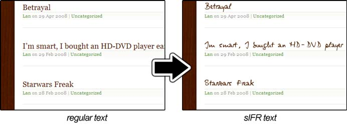

The jQuery sIFR Plugin is an addon for jQuery that makes it easy to replace text in a web page with flash text (sIFR).
It gives you a function in javascript to replace text in a web page dynamically with sIFR (Scalable Inman Flash Replacement) text, using native jQuery functionality along with the jQuery Flash Plugin.

First, jQuery makes finding the item(s) that you want to replace as easy as using CSS. Then, the jQuery sIFR Plugin does all the work of figuring out the text, files, sizes, colors, and any other configurations needed for the conversion. The jQuery sIFR plugin is fully configurable and can choose how little or how much you want to customize the display of the sIFRed text. Finally, the jQuery Flash Plugin does a most excellent job of embedding the sIFR flash into your web page. After all is said and done, you should have beautiful sIFR replaced text with consistent behavior across all major browsers.
jQuery is a small but power-packed bundle of javascript functions that make writing javascript quick and simple. Selecting elements on your page is like using CSS, learning and using functions requires minimal fuss, and the learning curve is sometimes described as "zero".
The jQuery Flash Plugin is the best tool for embedding flash into a web page. It's basically SWFObject written in jQuery. It's better in my opinion because it's as intuitive and configurable as jQuery, and it uses jQuery's native functionality to the eliminate the otherwise code redundancy in SWFObject, meaning you get a much smaller filesize and even faster loading.
I know. Get it now!
The jQuery sIFR Plugin strives to make configuration simple and intuitive. Specify what you need, and nothing more -- sensible defaults take care of the rest.
$('#someThing').sifr({ font: 'My Awesome Font' // this will load the font name 'My Awesome Font.swf' });
$('#someThing').sifr({ path: 'resources/fonts' // this will prepend 'resources/fonts/' to the font name });
$('#someThing').sifr({ width: 500 // this will make the sIFR element 500 pixels wide });
$('#someThing').sifr({ height: 30 // this will make the sIFR element 30 pixels high });
$('#someThing').sifr({ color: '#f00' // this will make the text red });
$('#someThing').sifr({ link: '#0f0' // this will make hyperlinks green });
$('#someThing').sifr({ hover: '#00f' // this will make hyperlinks blue when a mouse goes over them });
$('#someThing').sifr({ underline: true // this will links underlined });
$('#someThing').sifr({ textTransform: 'capitalize' // this will make every first letter in every word uppercase });
$('#someThing').sifr({ textAlign: 'right' // this will align the sIFR text to the right of the embed });
$('#someThing').sifr({ offsetLeft: 3 // this will move the text 7 pixels right maybe hiding the right of the text });
$('#someThing').sifr({ offsetTop: 7 // this will move the text 7 pixels down maybe hiding the bottom of the text });
$('#someThing').sifr({ zoom: .5 // this will zoom the text to 50% of the original size });
$('#someThing').sifr({ zoomLeft: 1.5 // this will make the zoom from the left 150% as strong });
$('#someThing').sifr({ zoomTop: .75 // this will make the zoom from the top 75% as strong });
$('#someThing').sifr({ content: 'sIFRed text' // this will change the text to be sIFRed });
$('#someThing').sifr({ expressInstall: true // user will be prompted to update their flash player with an expressInstall option });
$('#someThing').sifr({ update: true // user will be prompted to update their flash player });
$('#someThing').sifr({ version: '6.0.65' // this version or higher of flash must be present to run });
$('#someThing').sifr({ embedOptions: { wmode: 'window' // this will disable the transparency of the sIFR embedding } });
$('#someThing').sifr({ flashOptions: { expressInstall: false, // user will not be prompted with an expressInstall option update: true, // user will be prompted to update version: '7' // user must have at least flash player 7 } });
$('#someThing').sifr({ flashvars: { linkcolor: '#FF0000', // this would overwrite the link color emcolor: '#FF6600' // for styling elements in multi-color sIFR fonts } });
$('#someThing').sifr({ before: function () { alert('We need sIFR power for ' + this.length + ' object(s)!'); // alerts before any sIFRing } });
$('#someThing').sifr({ after: function(param) { alert('sIFR is completely done with the font ' + param.font + '!'); // alerts after all sIFRing } });
$('#someThing').sifr({ beforeEach: function () { alert(this.innerHTML + ' needs sIFR power!'); // alerts before every element } });
$('#someThing').sifr({ afterEach: function (t) { alert(t.text() + ' needed sIFR power!'); // alerts after every element } });
$('#someThing').sifr({ path: 'resources/fonts', underline: true, save: true // everytime jQuery sIFR runs, from now on these settings will be the default });
$.sifr({ // save is true by default if sIFR is run without an element path: 'resources/fonts', underline: true });
$('#someThing').sifr({ unsifr: true // this will un-sIFR text, if the text is currently sIFRed });
In this example, we change the text of an element with the id of oldtype into red Medici sIFR text.
<div id="oldtype" style="font: 8em 'Times'; ">Sample Text</div> <input type="button" value="sIFR this..." onClick="$('#oldtype').sifr({font: 'fonts/Medici Text', color:'#f00'}); "> <input type="button" value="UnsIFR this..." onClick="$('#oldtype').sifr(false); ">
In this example, we save some settings for later use.
<script type="text/javascript"> $.sifr({ path: 'fonts/', color: '#060' }); </script> <div id="gunmetal" style="font: 5em 'Times'; ">Sample Text</div> <input type="button" value="sIFR this..." onClick="$('#gunmetal').sifr({font: 'Gunmetal' }); "> <input type="button" value="UnsIFR this..." onClick="$('#gunmetal').sifr(false); ">
In this example, you can test your own results with my plugin.
<div id="test" style=""> </div> <input type="button" value="sIFR this..." onClick="$('#test').sifr({}); "> <input type="button" value="UnsIFR this..." onClick="$('#test').sifr(false); ">
In Opera Browsers, you must set the font in the function (e.g: $('h1').sifr({font: 'font name'});), because Opera drops unregistered fonts from CSS. Apparently, they don't want to dream.
You should not use jQuery packed with this plugin (or ever for that matter). If you do use jQuery packed with this plugin, Internet Explorer will probably display a "click to activate" border on every sIFR replacement.
jQuery Sifr Plugin uses a dual MIT/GPL license.
Copyright (c) 2008 Jonathan Neal
Permission is hereby granted, free of charge, to any person obtaining a copy of this software and associated documentation files (the "Software"), to deal in the Software without restriction, including without limitation the rights to use, copy, modify, merge, publish, distribute, sublicense, and/or sell copies of the Software, and to permit persons to whom the Software is furnished to do so, subject to the following conditions:
The above copyright notice and this permission notice shall be included in all copies or substantial portions of the Software.
THE SOFTWARE IS PROVIDED "AS IS", WITHOUT WARRANTY OF ANY KIND, EXPRESS OR IMPLIED, INCLUDING BUT NOT LIMITED TO THE WARRANTIES OF MERCHANTABILITY, FITNESS FOR A PARTICULAR PURPOSE AND NONINFRINGEMENT. IN NO EVENT SHALL THE AUTHORS OR COPYRIGHT HOLDERS BE LIABLE FOR ANY CLAIM, DAMAGES OR OTHER LIABILITY, WHETHER IN AN ACTION OF CONTRACT, TORT OR OTHERWISE, ARISING FROM, OUT OF OR IN CONNECTION WITH THE SOFTWARE OR THE USE OR OTHER DEALINGS IN THE SOFTWARE.
jQuery Sifr Plugin by Jonathan Neal
Copyright (C) 2008 Jonathan Neal
This program is free software: you can redistribute it and/or modify it under the terms of the GNU General Public License as published by the Free Software Foundation, either version 3 of the License, or (at your option) any later version.
This program is distributed in the hope that it will be useful, but WITHOUT ANY WARRANTY; without even the implied warranty of MERCHANTABILITY or FITNESS FOR A PARTICULAR PURPOSE. See the GNU General Public License for more details.
You should have received a copy of the GNU General Public License along with this program. If not, see
Feel free to leave me any questions, concerns, encouragement, or any other feedback related to the jQuery sIFR Plugin.